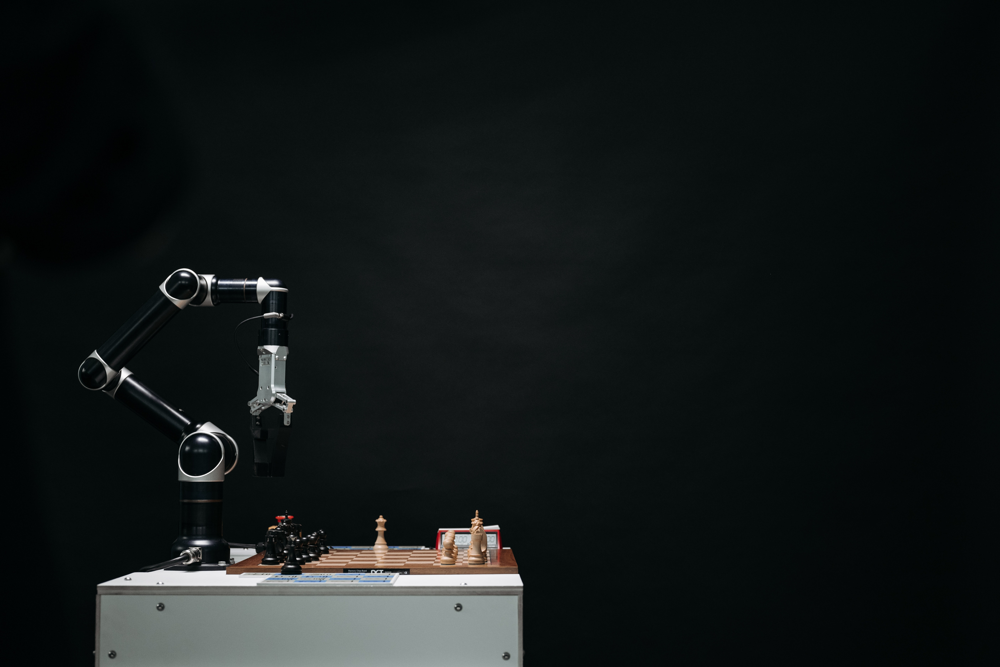

Perfíl Pessoal
Sou estudante de graduação da engenharia de telecomunicações da Universidade Federal do Rio Grande do Norte (UFRN). Neste portfólio, constituem os projetos pessoais e os projetos feitos na universidade, que demonstra as minhas habilidades e conhecimento no âmbito da engenharia de telecomunicações.
Projetos
Projetos de Telecomunicações
Projeto de Infraestrutura de Telecomunicações
 Projetos de Telecomunicações
Projetos de Telecomunicações
Desenvolver antenas do tipo microfita utilizando softwares como MICROSTRIP PATCH ANTENNA CALCULATOR, MICROSTRIP LINE CALCULATOR E ANSOFT HFSS para diferentes arranjos e geometrias.
Projetos de Telecomunicações

Desenvolver um receptor FM utilizando software LTspice. Incluindo desenvolvimento dos componentes como amplificador operacional, filtro, misturador, oscilador e demodulador.
Projetos de Telecomunicações
Desenvolver um projeto de comunicação sem fio ponto a ponto com as ferramentas de google earth, UbiquitiLink e LINKPlanner.
Projetos de Telecomunicações

Desenvolver um controlador de tráfego inteligente para controlar um cruzamento de duas vias utilizando o projeto RTL e a linguagem VHDL.
Projetos de Inteligência Artificial

Desenvolver um sistema de detecção de intrusão utilizando os algoritmos de inteligência artificial como PCA (Principal Component Analysis) e Random Forest.
Projetos de Ciência de Dados

Neste projeto foi implementado as tecnicas de análise exploratória de dados, utilizando as bibliotecas de scikit-learn e um conjunto de dados de IoT.
Projeto de Django Framework
Desenvolver uma aplicação blog com django que permite um admistrador para gerenciar o sistema e multiplos usuários podem logar e postar um artigo. Além disso permite também o usuário postar a fotografia ou avatar.
Porjeto de Django Rest Framework e React JS
Desenvolver um API de cadastro de livros com Django Rest Framework e desenvolver uma lista de tarefas com Django Rest Framework como backend e React Js como frontend.